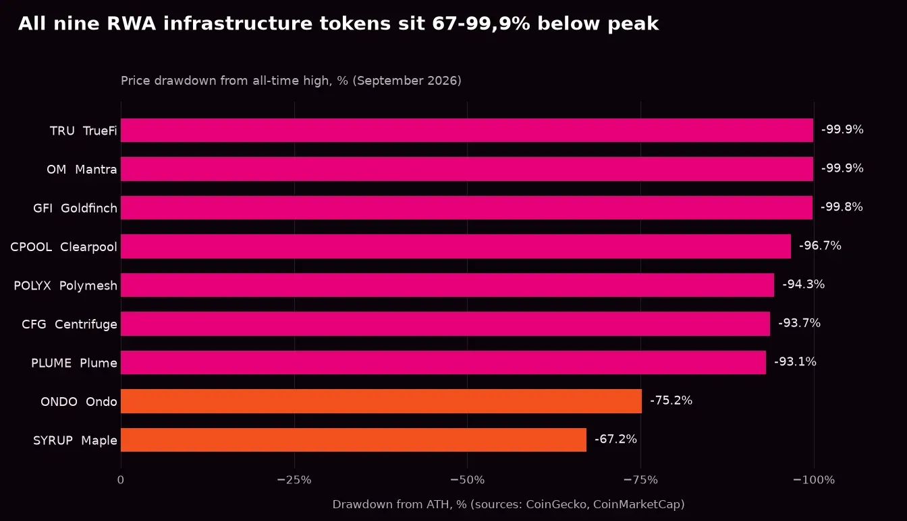

The key point: without government debt, RWA has no safe segment left
The study covers RWA tokens that are securities, net of tokenized funds holding US Treasury bills, other government debt, tokenized exchange-listed equities, stablecoins and gold. This is the market for private assets: credit, funds, real estate, PE/VC. It holds about $12.3 billion and about 300 tokens, and every one of its segments has seen defaults, price collapses or non-repayments. Not a single product we were able to find here carries an agency rating at the token level.
Ten findings of the study
Bottom line. The thesis that "there is little risk in RWA" rested on Treasury funds. Without them, this is a small, almost unrated market for private assets, closer in risk profile to venture capital and private credit than to bonds. The main risks are: the operator, the legal structure, exit liquidity and concentration on a single borrower.
Registry: around 300 tokens worth $12.3B, two-thirds of them credit
A complete registry of RWA security tokens does not exist: no tracker flags the legal status of a security. The working basis of this research: rwa.xyz as of September 28, 2026 (distributed value, i.e. tokens actually circulating onchain). The headline figures of an "RWA market of $300 billion+" rest on a different metric, represented value, where $316.5 billion comes from a single intra-bank repo at Broadridge DLR and $23.2 billion from Figure loans. It is not taken into account here.
What is excluded and why
| Excluded | Value | Reason |
|---|---|---|
| US Treasury bills and money market funds | $14.69B | sovereign debt |
| Spiko/Amundi money market funds within "active strategies" | around $2.2B | eurozone sovereign debt |
| Non-US sovereign debt | $1.04B | sovereign debt |
| Tokenized listed equities | $3.15B | excluded by definition |
| Commodities (almost entirely gold) | $5.17B | not a security |
| Stablecoins | $306.3B | not a security |
Composition of the cleaned market
| Class | Value | Share of cleaned market | Number of assets |
|---|---|---|---|
| Asset-backed lending (asset-backed) | $2.71B | 22% | 33 |
| Specialty finance | $2.64B | 21% | 13 |
| Active strategies excluding money market funds | around $1.8B | 15% | around 40 |
| Corporate credit | $1.71B | 14% | 64 |
| Private equity | $1.33B | 11% | 24 |
| Venture funds | $1.04B | 8% | 6 |
| Diversified credit | $0.85B | 7% | 38 |
| Real estate | $0.23B | 2% | 85 |
| Total | around $12.3B | 100% | around 300 |
Source: rwa.xyz, rwa.xyz/credit, the share calculation and the residual for active strategies are ours. The data is live and changes daily. The credit classes together amount to $7.91 billion and around 197,600 holders.
Largest products
| Product | Class | Value | Market share | Holders |
|---|---|---|---|---|
| Maple syrupUSDC | private credit (overcollateralized) | $1.00B | 8.1% | 8,587 |
| Blockstream Mining Note 2 | mining note | $0.98B | 8.0% | n/a |
| Blockchain Capital BCAP | venture fund | $0.97B | 7.9% | 630 |
| Janus Henderson JAAA (Centrifuge) | AAA CLO tranches | $0.59B | 4.8% | 36 |
| Securitize AAA CLO (STAC) | AAA CLO tranches | $0.28B | 2.3% | n/a |
| Apollo ACRED | private credit | $0.095B | 0.8% | 70 |
| SPiCE VC | venture fund | $0.025B | 0.2% | 287 |
Source: rwa.xyz, September 28, 2026. The BCAP value is calculated from the fund's NAV, not from the token's market price. Hamilton Lane holds only $4–10 million per fund in onchain products. Figure's loans are counted as represented and barely register in distributed value.
Concentration
The five largest products hold around $3.8 billion, or 31% of the cleaned market. The remaining about 295 tokens split around two-thirds. Funds of the JAAA and ACRED tier have between 36 and 70 holders: these are wholesale products whose exit depends on the issuer, not on an exchange order book.
The first wave: STOs 2017–2021
Before the current boom there was a first cycle of security token offerings. Its results are worth keeping in mind, because it is the only long track record available:
- The study by Lambert, Liebau, Roosenboom (Small Business Economics, 2022) covered 183 STOs over 2017–2019. Around 60% of the offerings raised no capital at all, on average issuers collected around 21% of their target, and the median raise was on the order of $13,000.
- As of January 2020, only 9 security tokens were trading on the secondary market across three venues, and their capitalization fell over 2019 from $182.1 million to $76.1 million (Security Token Market).
- According to Kreppmeier and Laschinger (Journal of Business Economics, 2023), 83% of the 108 tokens studied traded on DEXs with low liquidity, and returns were extreme in both directions.
- The infrastructure of the first wave has largely disappeared. OpenFinance Network, the first regulated US venue for security tokens, delisted all tokens in 2020. Neufund shut down its STO platform, Harbor was sold to BitGo, Templum left public blockchains, and INX was absorbed by Republic.
There is no systematic study of how many of the 2017–2021 STOs are still alive today. That is a gap in the literature, and it is telling in itself.
First-wave STOs have been retained in this research: these are tokens of issuers' own shares, stakes and funds (tZERO, INX, Aspen, SPiCE, BCAP), not tokenized listed equities, which are excluded by definition.
Ratings: no agency ratings, crypto-native ones for two or three products
Neither rwa.xyz, nor the agencies, nor crypto-native rating companies publish ready-made statistics on the share of rated RWA tokens. The assessment below was compiled manually from public rating actions.
Bottom line on the share. Out of about 300 tokens in the cleaned-up market, not a single one was found to have an agency rating at the token level. A crypto-native Particula rating exists for two or three products. By count that is about 1% of tokens, by value about 5% of the market, almost entirely thanks to JAAA. Roughly 95% of the value of private RWA assets has not been assessed by an external party at all.
Who has been rated
| Product | Class | Rating | Rated by | Date |
|---|---|---|---|---|
| Anemoy JAAA | AAA CLO tranches | AAA | Particula | Nov 2025 |
| NYLIM Anemoy HYB | high-yield bonds | A | Particula | Aug 2026 |
| Kairos KAI18-1 | class not disclosed | B+ | Particula | Apr 2026 |
| Figure HELOC ABS, $355M | mortgage ABS | from AAA to B- across tranches | S&P | June 2025 |
Sources: Particula, Particula: JAAA, Figure / S&P.
Figure's S&P rating applies to the securitization deal, while Figure's loans themselves are counted on rwa.xyz as represented, meaning they barely enter the circulating onchain market. Particula itself notes that its assessments are not ratings under the EU regulation on credit rating agencies.
Who is not covered by ratings
- Onchain credit: Maple syrupUSDC, Centrifuge pools, Goldfinch, TrueFi, Clearpool. Credora (part of RedStone since 2025) assesses DeFi vaults and lending markets on Morpho and Spark, not individual RWA tokens (CoinDesk).
- Funds of large managers: Apollo ACRED, Securitize's CLO fund, Hamilton Lane funds. The credit quality of their underlying assets may be high, but no one has assessed the token wrapper.
- PE/VC, real estate, STOs, pre-IPO: no ratings at all.
What the excluded segment shows
Agency ratings of tokenized products exist almost exclusively for T-bill funds, which are excluded from this study. Their example is still useful: even for funds with AAA-level assets, Moody's and S&P assigned ratings from A-bf to AA+f, below the sovereign level, pricing in wrapper risk (SPV, redemption, smart contract, oracle, manager). S&P's methodology for tokenized funds explicitly adds these factors to the conventional assessment (Fintech Times).
The implication for private assets: if the wrapper lowers the rating even for T-bill funds, then for unrated credit and PE tokens both layers of risk remain unassessed at once: the credit of the underlying asset and the token's construction.
Onchain Credit: All Four Market Pioneers Went Through Default
Credit accounts for 64% of the cleaned-up market, so its history defines the risk of all RWA excluding government debt. Tokenized private credit is sold as "real-economy yield with blockchain transparency." The history of 2022–2026 shows the opposite: the loan record is transparent, but the borrower's condition is not. All four major unsecured credit protocols of the first wave faced defaults, and two of them did not survive the consequences.
Timeline of major defaults
| Date | Protocol | Borrower | Amount | Losses and recovery |
|---|---|---|---|---|
| July 2022 | Maple (M11) | Babel Finance | $10M | loss of about $7.9M, pool wrote off 3.2–3.8% |
| Oct 2022 | TrueFi | Blockwater | $3.4M | about $650,000 repaid before default, then court-ordered collection |
| Nov 2022 | TrueFi | Invictus Capital | $1M | liquidation in the Cayman Islands, recovery not disclosed |
| Dec 2022 | TrueFi | Alameda Research | $7.2M | almost half of TrueFi's loans at that moment, recovery not disclosed |
| Dec 2022 | Maple (M11) | Orthogonal Trading | $36M | USDC pool lost 80%, WETH pool 17% |
| Feb 2023 | Maple (M11) | Auros Global | $18M | restructuring, 100% recovery later claimed |
| Apr 2023 | Centrifuge / Maker | Harbor Trade Credit | $2.1M | 2–3 years on, pool investors report no payouts |
| Aug 2023 | Centrifuge / Maker | ConsolFreight | pool $2.7M | issuer warned of the risk of total loss |
| June 2023 | Goldfinch | Tugende (Kenya) | $5M | $1.9M moved to the parent company, restructuring |
| Oct 2023 | Goldfinch | Stratos | about $7M | REZI and POKT positions written down to zero |
| Apr 2024 | Goldfinch | Lend East | $10.2M | expected recovery about 42 cents on the dollar |
| June 2026 | Goldfinch | protocol shutdown | $56.15M outstanding | 2 of 8 borrowers in default, 6 in restructuring |
| Feb 2026 | TrueFi / Archblock | operator bankruptcy | n/a | Chapter 11, collection on defaulted pools complicated |
Sources: The Block, CoinDesk: Maple, Auros, TrueFi blog, CoinDesk: Invictus, TrueFi forum: Alameda, CoinDesk: Harbor, CoinDesk: ConsolFreight, TechCrunch: Tugende, CoinDesk: Stratos, DL News: Lend East, The Defiant: Goldfinch, elevenflo: Archblock.
What mattered: concentration, not loan size
Babel and Orthogonal were comparable borrowers, but the consequences differed twentyfold. Babel cost the pool 3–4%. Orthogonal accounted for about 80% of the M11 USDC pool and destroyed 80% of its capital. As of December 2022, Maple's distressed debt stood at $54 million, or 66% of outstanding loans, while active loans fell over six months from $900 million to $82 million (CoinDesk).
At TrueFi, the Alameda loan accounted for almost half of the portfolio at the moment of FTX's collapse. The pool was diversified formally, but not in fact.
Goldfinch: the longest story of losses
Goldfinch lent to emerging-market fintechs through a "senior pool" that was sold as protected. Officially recognized losses amounted to at least $18 million. In June 2026, depositors estimated real losses at roughly 70% of the pool versus 20% on the protocol's dashboard. There is no audited figure, but the discrepancy itself matters: the onchain pool's reporting did not show the portfolio's real quality (The Defiant). The GFI token fell from $32.94 to about $0.03, by 99.8%.
Frozen redemptions occur more often than outright write-offs
For an investor, a default often looks not like a write-off but like an inability to exit:
- the withdrawal queue from Goldfinch's senior pool had been building up since 2022, and in September 2023 the pool's shares traded at a discount of about 26% to NAV;
- investors in the Harbor Trade Credit pool on Centrifuge report no payouts and no communication several years after the default;
- Apollo Debt Solutions, Apollo's large credit fund, limited withdrawals for the third quarter in a row in September 2026: requests amounted to 14.7% against a 5% cap (Bloomberg via Yahoo). This is not the ACRED token directly, but ACRED is wrapped into an Apollo interval fund with the same 5% per quarter cap, and Securitize removed the promise of "daily" redemptions from its website (Unchained).
The last point is fundamental for 2026. Stress in traditional private credit is transmitted to tokens through the underlying funds, and a promise of instant liquidity at the token level cannot be better than the liquidity of the fund beneath it.
How much is that in percentage terms
Aggregate statistics on onchain credit are makeshift:
- according to rwa.xyz data via Qiro, by the end of 2024 $16.48 billion had been issued, of which $6.31 billion excluding Figure, with total defaults of $147.15 million (Qiro). This gives a cumulative default share of about 0.9% of all issuance and about 2.3% excluding Figure;
- as of September 2025, rwa.xyz showed $15.95 billion in active loans against $29.74 billion issued, of which 73% came from Figure. The PACT protocol on Aptos was noted as having $117 million of defaults with no public breakdown.
These percentages cannot be compared with an annual default rate in TradFi: the denominator is inflated by short revolving loans and Figure's mortgage loans. Fitch estimates defaults in US private credit at 6.3% over 12 months as of August 2026 (Bloomberg). The main difference of onchain credit lies elsewhere: upon default, recovery ranged from 0 to 42 cents on the dollar versus the typical 40–60 cents in traditional private credit.
What has changed since 2022
Maple has moved to overcollateralized loans against BTC and ETH and states that it has not lost principal since 2023 (Maple). Figure has shown no high-profile defaults, nor have the funds of large managers (JAAA, ACRED), but their testing is happening right now through redemption caps. Unsecured onchain credit to emerging-market borrowers is effectively closed as a model: Goldfinch has been wound down, TrueFi's operator is in bankruptcy.
Not to be confused with RWA. The collapse of Stream Finance xUSD (November 2025, about $93 million in losses, xUSD fell to $0.07–0.26) and Elixir deUSD ($68 million of exposure, a drop to $0.015) are often mentioned as "RWA yield," but these are DeFi strategies, not tokenized securities (BlockEden). They are not included in the count of RWA defaults, although for an investor the risk looked the same: "yield from the real world" that in fact did not exist.
Beyond Credit: The Blockchain Worked; the Operator, the Law, and Liquidity Broke
In these cases, smart contracts were almost never the cause of losses. The token transferred just fine while the underlying asset disappeared, the issuer refused to recognize the holder, or the secondary market turned out to be empty.
First-wave STOs: selling at a fair price is impossible
- tZERO (TZROP). The largest STO of its time: $134 million from roughly 1,000 accredited investors at $10 ($8 in the presale). After trading opened in February 2019, the price fell to $3 with daily turnover below 1% of the issue (CoinDesk). The last trade on the STOmarket aggregator went through at $1.65, about 83% below the placement price. The tZERO platform itself cut staff in 2020, two tokens traded on its ATS, and in 2022 the SEC fined it $800,000 for ATS rule violations (SEC).
- INX. The first token IPO registered with the SEC: $85 million from more than 7,200 investors at $0.90 per token, in 2021 (CoinDesk). The token traded at around $0.09, i.e. 90% below the IPO price. In November 2025, Republic closed its acquisition of INX: token holders received a share of a cash pool of about $34.3 million, and trading was halted (press release). By our estimate, that is about 40% of the IPO amount.
- Aspen Coin (St. Regis Aspen). $18 million for a stake in the hotel, with a $1 par value. A peak of $1.34 in 2020 and a low of $0.85 in March 2022, while conventional hotel REITs were recovering from COVID (case study).
- SPiCE VC. This tokenized venture fund traded in 2022 at a discount of about 40% to NAV ($1.95 against a NAV of $3.21), with the best bid at $1.01 (Nanalyze). The fund continues to make distributions.
- Blockchain Capital (BCAP) was the counterexample: issued at $1 in 2017, its NAV grew many times over. Yet even it posted quarterly drawdowns of more than 30%.
Conclusion: the main risk of first-wave STOs was not fraud but the absence of liquidity and a chronic discount to asset value. The investor got a security that cannot be sold without a loss.
Tokenized real estate: RealT as the flagship case of non-recovery
RealT tokenized houses in Detroit through separate LLCs and paid out rental income in stablecoins. The tokens worked without a hitch. The operator failed:
The final recovery depends on the sale of a distressed portfolio, and in the payout queue token holders stand behind the fiduciary, repairs, taxes and legal claims. The key lesson: the token conferred an economic claim on an LLC, not ownership of a house. What needs checking is title, taxes, property condition and concentration in a single city, not the smart contract.
Pre-IPO tokens: the hottest and riskiest segment of 2026
- Robinhood, OpenAI and SpaceX tokens. In July 2025, OpenAI publicly stated that it had not approved these tokens and that they are not its equity. The Bank of Lithuania asked Robinhood for clarifications (TechCrunch).
- PreStocks, the Anthropic token. In May 2026, the token cost $1,006 (peak $1,409), three to four times more than the Series G round price. Perpetuals on it implied a company valuation of about $2 trillion, while the platform's own assets amounted to roughly $23 million. Anthropic stated that unauthorized transfers of its shares are void (CoinDesk).
- Linqto (the same model, but without blockchain) shows how this ends: Chapter 11 in July 2025, a new CEO admitting it was unclear what clients actually owned, and SDNY prosecutors describing a $450 million scheme with markups of up to 200% and higher (Orrick, InvestmentNews).
A pre-IPO token combines two risks: the issuer may not recognize the holder, and the price is detached from the underlying asset. A positive contrast: CREV (Revolut shares via a Swiss DLT certificate and a trust, for qualified investors only) has shown no failures, but the question of issuer consent to share transfers applies to it just the same.
Fraud under the RWA banner
- Unicoin. In May 2025, the SEC filed suit: about $110 million from more than 5,000 investors for tokens "backed" by real estate and pre-IPO shares worth a claimed $3 billion+, while actual assets were many times smaller (SEC).
- E-Estate Group. In June 2026, the Texas regulator issued an emergency order halting the MLM sale of real estate tokens starting at $10 (Texas SSB).
- China in January 2026, through seven financial associations, declared RWA tokenization an illegal financial activity (Cryptonews). Hong Kong's IFEC warns that RWA tokens are often unauthorized collective investment schemes (IFEC).
Default registry: 17 documented cases, full repayment in one
The registry includes cases where investors in tokenized private assets did not get their money back in full or received it after years of delay. Pure DeFi strategies (Stream, Elixir), price declines without a default event and tokenized listed equities (FTX) are excluded. Full repayment was recorded only for Auros on Maple after restructuring.
| Date | Case | Class | Funds at risk | What investors received |
|---|---|---|---|---|
| June 2026 | Goldfinch, wind-down | onchain credit | $56.15M outstanding | repayment stretched over 2+ years, depositors estimate losses at ~70% |
| July 2026 | RealT | real estate | about $140M | liquidation, ~$640,000 in escrow, roughly $45 per investor |
| June 2026 | E-Estate Group | real estate, MLM | not disclosed | sales halted by the regulator, repayment undetermined |
| Feb 2026 | TrueFi / Archblock | onchain credit | defaulted pools | the operator's bankruptcy complicated recovery |
| Nov 2025 | INX | registered token IPO | $85M at IPO | cash pool share of about $34.3M at acquisition, about 40% of the IPO amount |
| July 2025 | Linqto | pre-IPO, off-chain | $450M scheme according to SDNY | Chapter 11, plan confirmed in Feb 2026 |
| May 2025 | Unicoin | "backed" tokens | about $110M | SEC fraud suit, repayment undetermined |
| Apr 2024 | Goldfinch / Lend East | onchain credit | $10.2M | about 42 cents on the dollar expected |
| Oct 2023 | Goldfinch / Stratos | onchain credit | about $7M | positions written down to zero, coverage promised by Warbler Labs |
| Aug 2023 | Centrifuge / ConsolFreight | onchain credit | $2.7M pool | risk of total loss, outcome not disclosed |
| June 2023 | Goldfinch / Tugende | onchain credit | $5M | restructuring, write-off forecast cut to under 1% of the pool |
| Apr 2023 | Centrifuge / Harbor Trade | onchain credit | $2.1M | 2–3 years on, investors report no payouts |
| Dec 2022 | Maple / Orthogonal | onchain credit | $36M | loss of 80% of the USDC pool and 17% of the WETH pool |
| Dec 2022 | TrueFi / Alameda | onchain credit | $7.2M | claim in the FTX bankruptcy, outcome not disclosed |
| Nov 2022 | TrueFi / Invictus | onchain credit | $1M | borrower liquidation, outcome not disclosed |
| Oct 2022 | TrueFi / Blockwater | onchain credit | $3.4M | about $650,000 repaid before default, the rest through the courts |
| July 2022 | Maple / Babel | onchain credit | $10M | loss of about $7.9M |
Exposure across these cases amounts to about $900 million including Linqto and Unicoin, and about $350 million for tokenized products alone (our calculation based on the amounts in the table). For a market of $12.3 billion in size, that is about 3% of its current value. The exact amount of unrecoverable losses is unknown: in most cases repayment has not been disclosed or is still ongoing.
No segment is left without defaults. In the broader RWA market, that segment used to be Treasury bill funds, where no redemption refusals were found. Once they are excluded, every class of the cleaned market (credit, real estate, funds and STOs, pre-IPO) has at least one documented default case.
RWA Protocol Tokens: Asset Growth Does Not Rescue the Price
A separate risk that investors often confuse with the risk of RWAs themselves: the tokens of the protocols and networks engaged in tokenization. These tokens are not a claim on assets, they are governance and speculative tokens. All nine reviewed are deep below their peak.

CoinGecko, CoinMarketCap, coinpaprika · prices as of September 2026 · 9 tokens
The heaviest losses are at the uncollateralized lending protocols (TrueFi, Goldfinch, Clearpool) and at Mantra, whose network halted in August 2026 after the token collapsed 90% in one hour in April 2025 (Decrypt). Meanwhile, Plume's holder count and on-chain RWA volume were growing, yet the PLUME token still lost 93% (BeInCrypto). Even for the segment's leaders, Ondo and Maple, the declines are 75% and 67%.
The takeaway for an investor: buying an RWA protocol's token does not mean buying exposure to RWAs. It is a bet on the economics of the protocol's token, and the history of 2021–2026 is unfavorable for that bet. For Mantra a ticker migration is possible, so the comparison with the peak is approximate.
Risk assessment: without government debt the risk is high in every segment
No, the risks in RWA tokens of private assets are not small. Low risk in RWA was provided by one segment, treasury funds, and it was also the one that dominated the statistics by value. Once it is excluded, both the segment without failures and almost all the ratings disappear, while the register of failures stays the same.
What changes when government debt and equities are excluded
| Indicator | All RWA securities | Excluding government debt, T-bills and equities |
|---|---|---|
| Value | about $33.4B | about $12.3B |
| Number of tokens | about 3,460 | about 300 |
| Share with an agency rating by value | 9–14% | about 0% |
| Share with any rating by value | up to 36% in the treasury segment | about 5% |
| Segments with no known non-repayments | treasury funds (38% of value) | none |
| Non-repayment cases in the register | 18 | 17 |
| Benchmark for cumulative defaults in credit | about 0.9% (with Figure) | about 2.3% (without Figure) |
Sources: rwa.xyz (September 28, 2026), Qiro, our own calculations.
Share of failures by segment
There is no comprehensive register of defaults, so the shares are calculated from the samples used in this study. They show the order of magnitude, not exact statistics.
| Segment | Share of the cleaned market | What was checked | Default, non-repayment or an 80%+ drop | Rating |
|---|---|---|---|---|
| On-chain credit, first-wave protocols | part of the 64% in credit | 4 large protocols | 4 out of 4 with defaults, 2 out of 4 shut down or with the operator in bankruptcy | none |
| Credit funds of large managers (JAAA, ACRED, STAC) | about 8% | 3 products | no defaults, Apollo has a 5% quarterly redemption cap and a 14.7% queue | Particula for JAAA |
| STOs of 2017–2021 and tokenized funds | about 10% including BCAP | 5 largest traded | 4 out of 5 below the placement price or NAV, 2 out of 5 down by 80–90% | none |
| Real estate | 2% | the largest platform (RealT) | liquidation, recovery of about $45 per investor | none |
| Pre-IPO tokens | part of PE/VC | 3 cases (Robinhood, PreStocks, Linqto) | 3 out of 3 with the issuer refusing to recognize the holder or with bankruptcy | none |
| Tokens of RWA protocols and networks | not part of the market | 9 tokens | 9 out of 9 below peak by 67%+, 7 out of 9 by 90%+ | none |
The samples are biased toward well-known failures, but also in the opposite direction: small projects that quietly disappeared do not make the news. For a market of about 300 tokens, 17 documented non-repayments plus several more price collapses mean that at least 5–10% of issuers by count had problems, while by amount the exposure is about 3% of the market's current value.
Why the risk of private RWA is underestimated
Risk map
| Risk | How it materialized | Examples | Frequency | Severity |
|---|---|---|---|---|
| Borrower credit risk | default, restructuring | Goldfinch, TrueFi, Centrifuge | high in unsecured credit | 58–100% of the loan |
| Concentration on a single borrower | one default wipes out the pool | Orthogonal (80% of the pool), Alameda (half of TrueFi) | high in credit | 17–80% of the pool |
| Operator and off-chain assets | the asset is not in the declared condition or does not belong to the issuer | RealT, Unicoin | medium | up to total loss |
| Exit liquidity | no buyer at a fair price, discount to NAV | tZERO, SPiCE, INX | high in STOs and funds | 40–90% |
| Redemption caps | the token's "daily liquidity" runs into the fund's quarterly cap | Apollo (5% cap), Goldfinch, Harbor | growing in 2026 | years of waiting |
| Legal title | the token does not grant rights to a share or to the asset | OpenAI, Anthropic, RealT | high in pre-IPO | up to total loss |
| Counterparty and custodian | an intermediary's bankruptcy freezes the assets | Linqto, Archblock | medium | years of proceedings |
| Regulator | the product is shut down or declared illegal | China 2026, Texas, SEC vs Unicoin | medium | depends on the jurisdiction |
| Platform token price | the governance token falls independently of the assets | GFI, TRU, OM, PLUME | very high | 67–99.9% |
Unlike the treasury segment, here the credit risk of the underlying asset is real and is combined with all the structural risks at once.
Final assessment by segment
- Moderate risk: tokenized funds of AAA CLO tranches and credit funds of large regulated managers (JAAA, STAC, ACRED), overcollateralized crypto credit (Maple syrupUSDC). Residual risks: redemption caps, holder concentration, an unrated wrapper.
- High: unsecured private credit, tokenized real estate, tokenized VC/PE funds and STOs with a thin secondary market.
- Very high: pre-IPO tokens without the issuer's consent, tokens of RWA protocols and networks, products with a promised yield and no portfolio disclosure.
There is no low-risk segment in the cleaned market.
Checklist: twelve questions before buying an RWA token
Each item closes a specific failure from this report. If a question has no documented answer, the corresponding risk should be considered high.
For founders issuing an RWA token, this same list works in reverse: every item left unanswered will be treated as a risk by an investor or auditor and priced in.
Methodology and Limitations
- The "security" boundary. Trackers do not tag the legal status of a token. The study includes funds, notes, debt claims, SPV stakes and issuers' own equity tokens (STOs). Excluded by design: tokenized US Treasury bill funds and money market funds, other government debt (including the Spiko/Amundi eurofunds), tokenized listed equities, stablecoins. Also excluded are commodity tokens (gold) and pure DeFi strategies. The rwa.xyz breakdown by class is imprecise: the residual "active strategies" (about $1.8 billion) is our own estimate, and the cleaned market may still contain non-securities, for example Blockstream's mining note or USDtb.
- Market data were taken from rwa.xyz on September 28, 2026. They are updated daily, and in 2026 the methodology was changed (distributed and represented), so the series for previous years are not directly comparable.
- Ratings were collected manually from agency press releases and Particula's public reports. Fitch, KBRA and DBRS were checked only superficially. Particula's full registry is behind a registration wall.
- Defaults and non-repayments were collected from public sources. The absence of a case in the search results does not prove the absence of problems. For Credix, Huma, Polytrade, Ribbon Lend and Atlendis no confirmed defaults were found.
- Contested figures: Goldfinch's actual losses (officially about $18 million, by depositors' estimates up to 70% of the pool), the value of BCAP (probably at NAV), the prices of Aspen Coin and TZROP on the STOmarket aggregator, a possible migration of the Mantra ticker. Token prices change daily and are given as of the data cut-off date.
- Failure rates in the risk assessment section are calculated on samples rather than on a complete registry. This is an order-of-magnitude estimate.
Sources
Market and products: rwa.xyz, rwa.xyz/treasuries, rwa.xyz/credit, PYMNTS, Stobox, State of RWA 2026.
STO research: Lambert, Liebau, Roosenboom 2022, Kreppmeier, Laschinger 2023, Kreppmeier et al., Journal of Banking & Finance 2023, Security Token Market 2019, CoinDesk: OpenFinance, CoinDesk: Neufund.
Ratings: Particula, Particula: OUSG, Centrifuge: JTRSY, CoinDesk: BUIDL and FILQ, Crane Data: BENJI, The Block: TBILL, Fintech Times: S&P methodology, Ledger Insights: Moody's.
On-chain credit: The Block: Orthogonal, The Defiant: Goldfinch, DL News: Lend East, TrueFi forum: Alameda, CoinDesk: Harbor Trade, Qiro: State of tokenized private credit, Bloomberg: private credit defaults, Yahoo/Bloomberg: Apollo.
Failures outside credit: CoinDesk: tZERO, SEC: tZERO ATS, Newswire: INX, Crypto Briefing: RealT, City of Detroit, SEC: Unicoin, CNBC: Binance, TechCrunch: OpenAI, CoinDesk: Anthropic, Orrick: Linqto, CoinDesk: SEC on tokenized stocks, Mondaq: ESMA.
How to cite this study: “RWA Security Tokens Without Government Debt: How Big Is the Risk”, 8Blocks Research, October 2026. Permanent link: https://8blocks.io/research/rwa-security-tokens-without-government-debt.